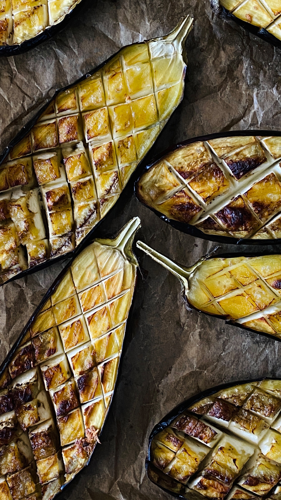

Whole Grilled Eggplant

Description
I love Eggplant. I used to eat it three times a day, and when I didn't get it, I had an eggplant shaped hole in my soul.
Beethoven allegedly loved eggplant, and it gave inspiration to some of his greatest works.
Bless this highly nutritious grillable food that gave people warm bellies and a big heart.
Please pass this recipe down to your children and great-grandchildren and they'll never go without a warm belly ever again.
All it takes is a grill and 5 ingredients for this melt in your mouth whole grilled eggplant.
Ingredients
- 1 (1-pound) eggplant
- 2 tablespoons extra virgin olive oil
- 1 lemon, halved
- 1 teaspoon flaky sea salt
- 1/2 teaspoon freshly cracked black pepper
- Flat-leaf parsley, finely chopped
Steps
- Preheat a gas grill to 500°F set to medium-high heat.
Adjust the grill as needed during cook time in order to maintain a temperature between 450°F to 500°F.
- Poke slits in the eggplant for steam to escape:
With a sharp knife, poke 10 shallow slits spread out around the surface of the eggplant, this will help steam escape, so the eggplant doesn’t abruptly burst open as it cooks.
- Grill the eggplant:
Place the eggplant on the preheated grill using tongs and close the lid. The grill will be smoky, that’s okay, as there is no oil (or fat) to cause a flare up.
After 20 minutes, check on the eggplant. If it looks deflated or sunken in on itself and the grilled side is softened to the touch, it’s ready to be flipped. If not, wait another 5 minutes, then use a pair of tongs to flip it to finish cooking until it’s softened all over and mushy between the tongs, 5 minutes.
- Let the eggplant cool a bit:
Once the eggplant is completely cooked through, use the tongs to gently remove it from the grill and onto a cutting board. Let it cool for 2 minutes.
- Slice the eggplant and transfer to serving plate:
Slice it in half lengthwise and transfer the halves to a serving plate. Loosely drag a fork through flesh to loosen the eggplant so the eggplant flesh is distributed into the nooks and crannies.
- Garnish and serve:
Lightly drizzle the eggplant with extra virgin olive oil and squeeze a lemon half over the top. Season with flakey sea salt and freshly cracked black pepper. Garnish with parsley.
Taste and adjust with additional salt, pepper, and lemon juice if needed.
To more recipes
Recipe from AllRecipes